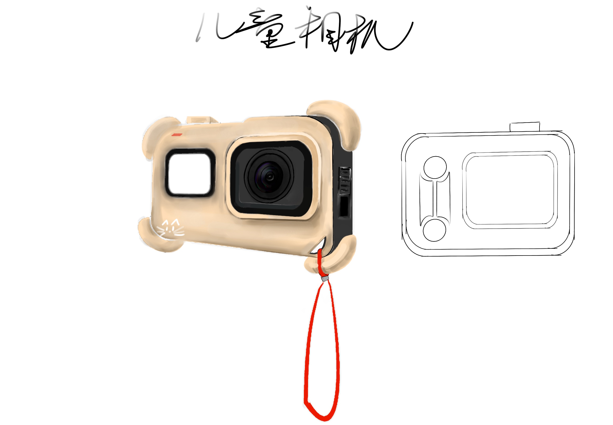
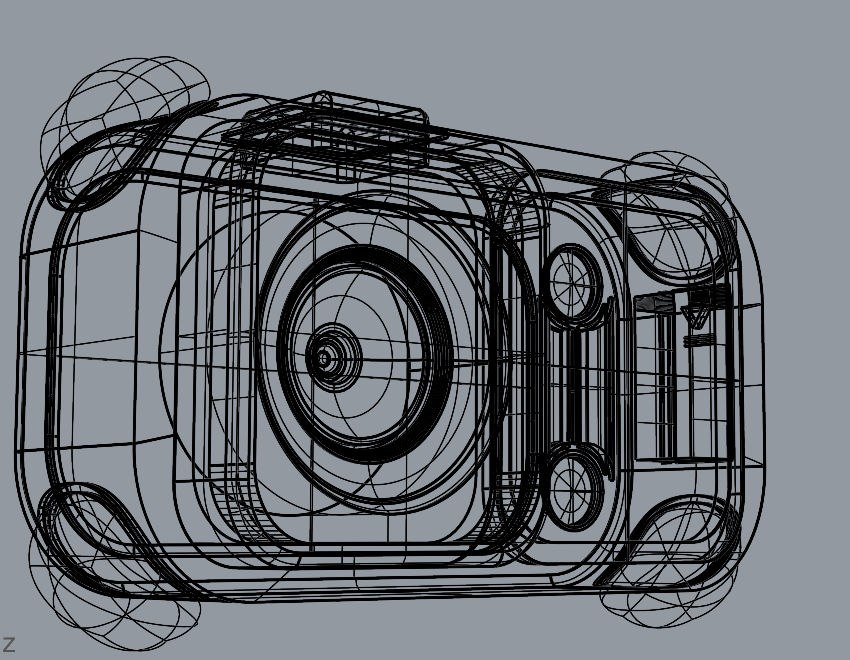
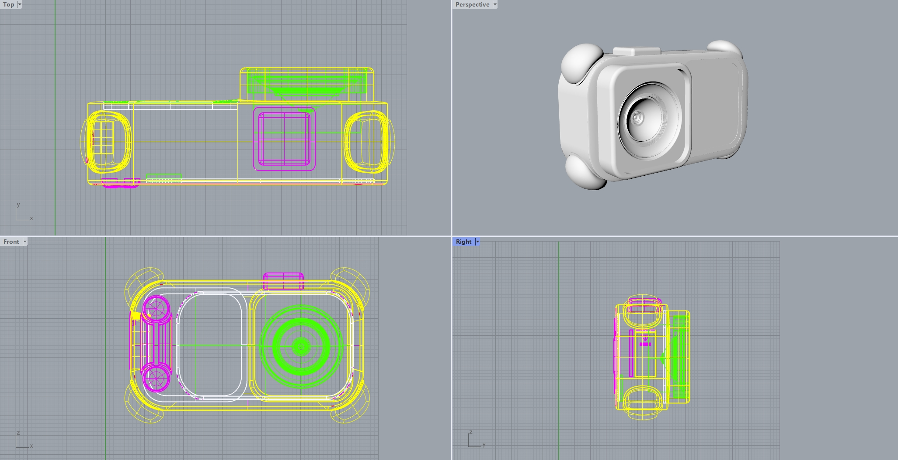
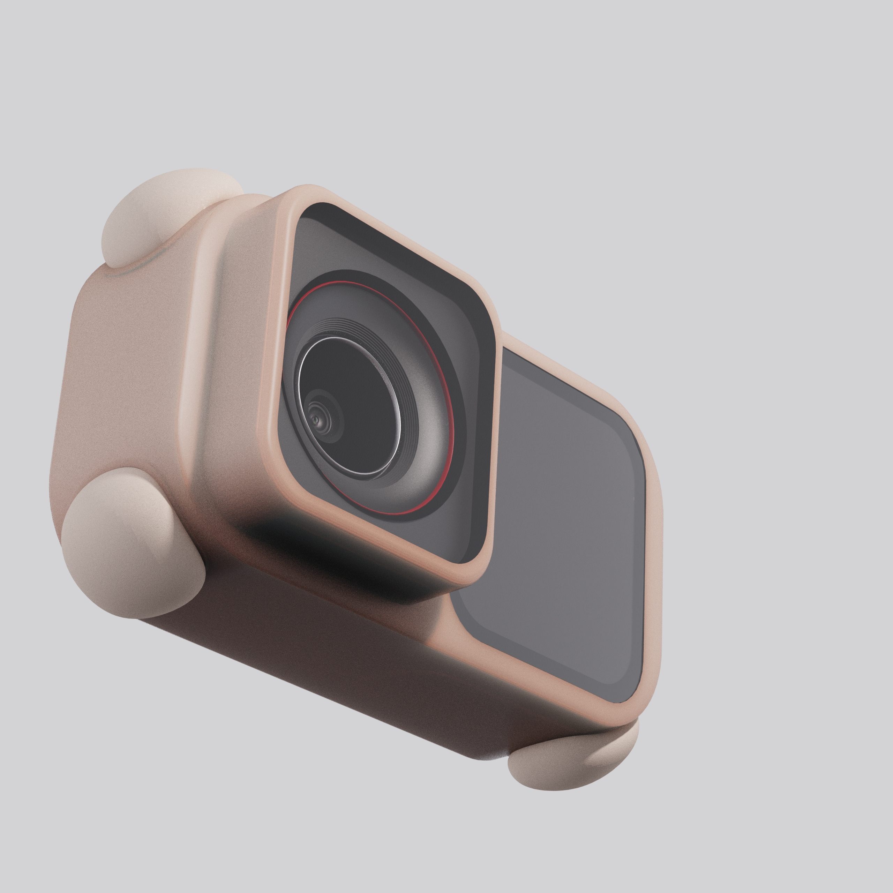
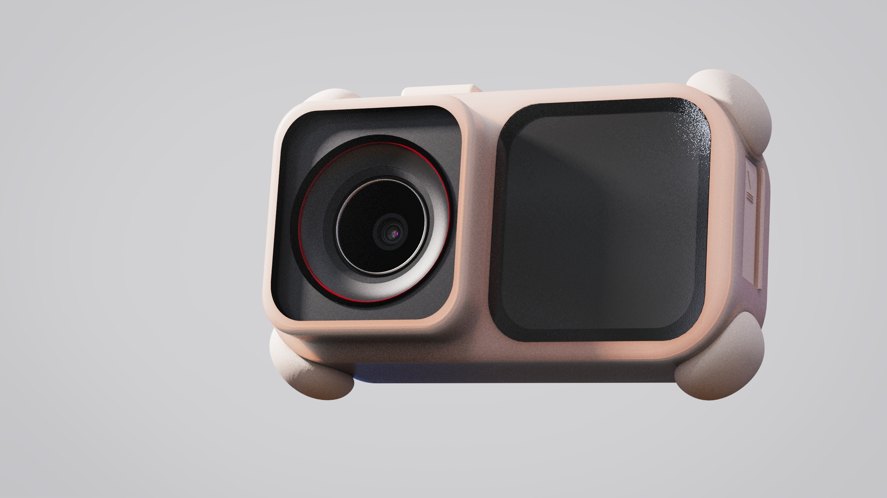
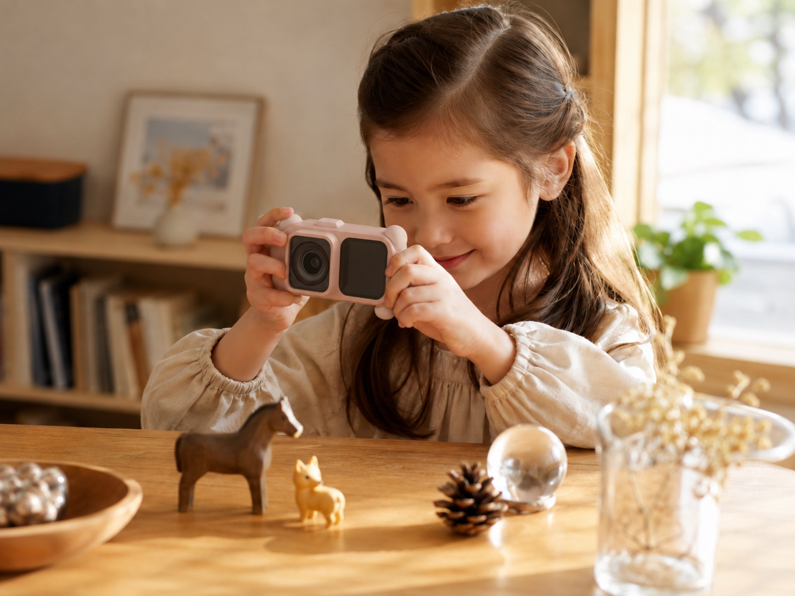
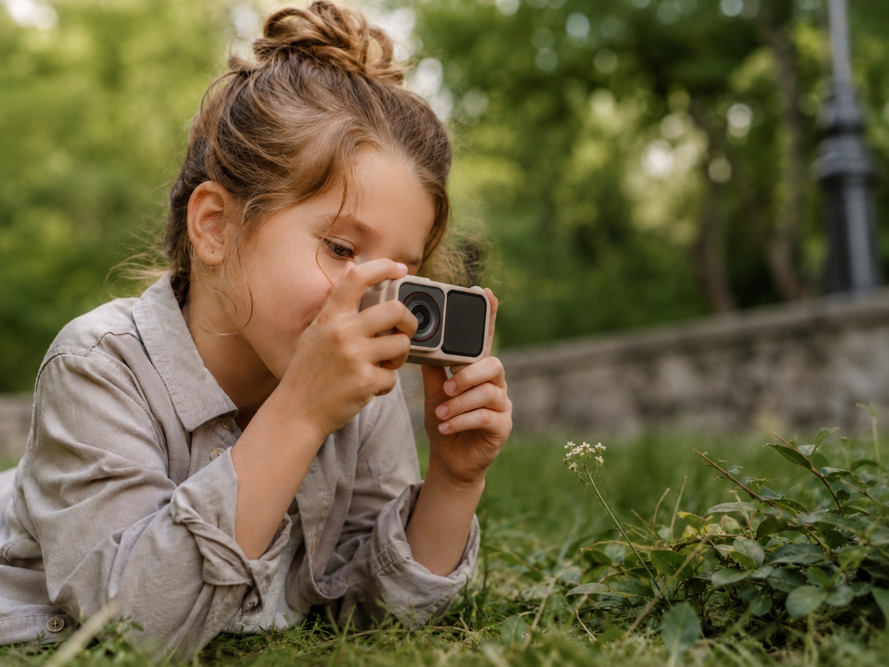
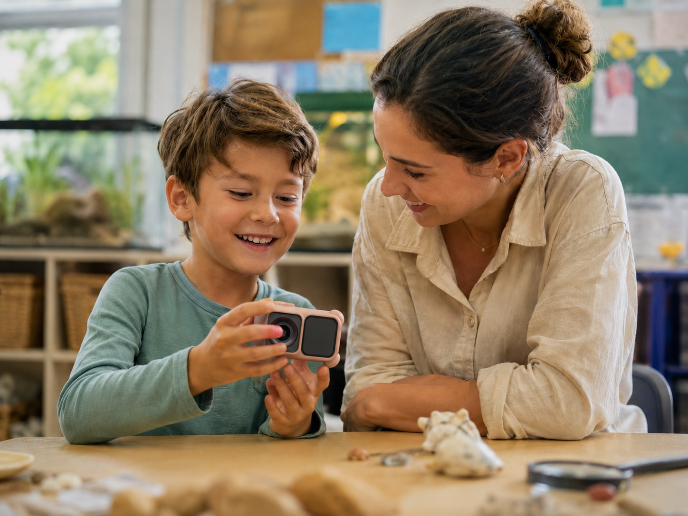
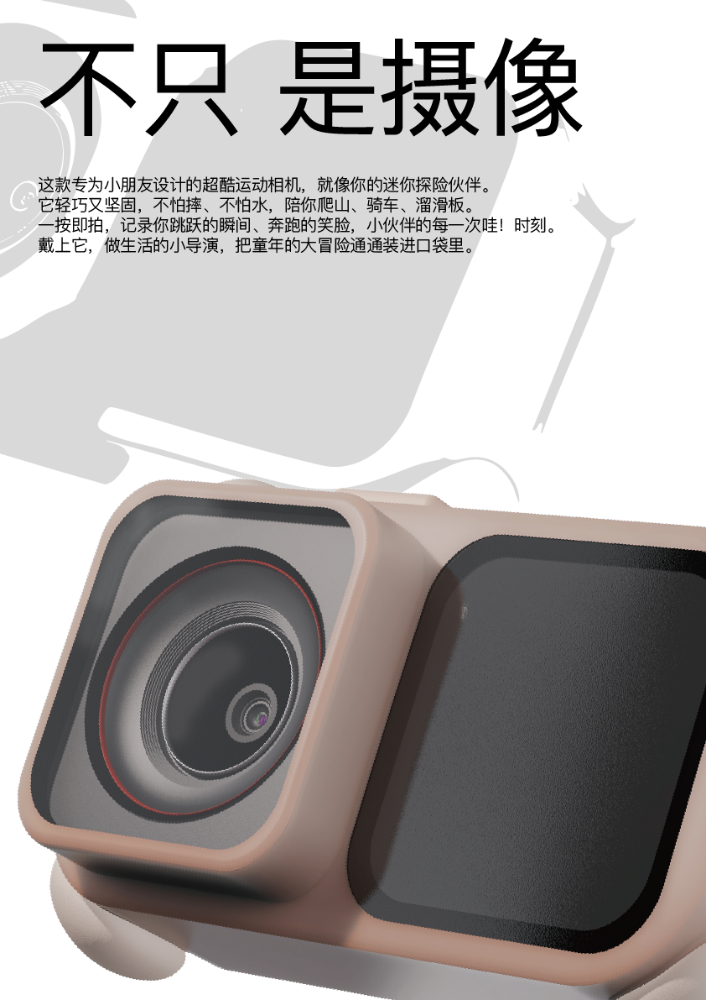

课程来源
设计心理学课程作业延展，整理为求职作品集项目页。
EXHIBITION CATALOGUE / CHILDREN'S ACTION CAMERA
一件可被观看、握持与理解的儿童行动相机
将儿童相机视作一件可被观看、握持与理解的产品对象：它以安全、易用和趣味为入口，让拍摄成为儿童主动观察世界的行为。

PROJECT THESIS
这份作品集从设计心理学课程出发，保留研究、案例、草图、建模和渲染过程，并以更克制的作品集语言重新组织。儿童相机不只是一个拍摄工具，它也是一个让孩子建立观察、记录与表达行为的产品对象。
设计重点从单纯造型展示，转向安全握持、即时反馈、低负担操作和探索欲激发。
设计心理学课程作业延展，整理为求职作品集项目页。
需要低负担操作、安全握持和游戏化反馈的儿童用户。
如何让拍摄从工具行为转化为儿童主动观察世界的习惯。
在紧凑形体中平衡安全、易用、趣味和探索欲。
RESEARCH INSIGHT
儿童在早晨准备、整理物品、出门准备等场景中，更需要可理解的提示与反馈。
设计转译：把拍摄入口做得直观，反馈要立即可见。社交化、仪式化和游戏化，是儿童行为习惯养成中的重要需求。
设计转译：让相机像一个可以分享发现的陪伴物。产品设计需要把提醒转译成正反馈、陪伴和游戏感，而不是单向要求。
设计转译：用形体亲和力和低门槛操作降低抵触感。DESIGN KEY 将提醒转译成正反馈、陪伴和游戏，而不是单向命令。
DESIGN PROCESS

SKETCH / FRONT CONCEPT
确定双窗口布局、镜头位置和儿童友好比例。

WIREFRAME / HARD-SURFACE MODELING
校验外壳厚度、圆角关系和硬表面结构。

ORTHOGRAPHIC / PROPORTION CHECK
统一正视、侧视、顶视比例，保证建模准确。

RENDERING / OBJECT REFINEMENT
优化材质、光影、软胶触感和产品真实感。
OBJECT STUDY
儿童使用相机时，产品需要降低抓握压力、操作理解成本和跌落风险。圆角体块、软质边角和大面积正面识别区，让儿童在拿起产品时就能快速理解拍摄方向与操作入口。

缓冲跌落冲击，减少儿童使用中的磕碰风险。
保护镜头模组，同时强化拍摄方向的视觉识别。
适合儿童小手抓握，降低持握不稳的问题。
让拍摄结果可被即时观看，增强反馈感。
大圆角体块和软质边角降低抓握压力，正面镜头与屏幕的清晰分区帮助儿童快速判断拍摄方向。
PROPORTION / INTERACTION
HAND SCALE
87.5 × 55 × 41.25 mm 被转译为三件事：横向可握、顶部可按、厚度不坠手。
圆角外壳、软质触感、防摔边角，减少儿童使用中的受伤风险。
大按钮、直观拍摄入口、小手可握持比例，降低操作认知负担。
像迷你探险伙伴一样陪伴户外、旅行、校园活动和日常观察。
SCENARIO GALLERY
孩子、相机和一次小小发现。



FINAL BOARD / ARCHIVE
设计，始于看见，终于成全。
这版不是复制原 PPT，而是把研究线索、设计选择和最终形体整合成一个更清晰的展示系统。
